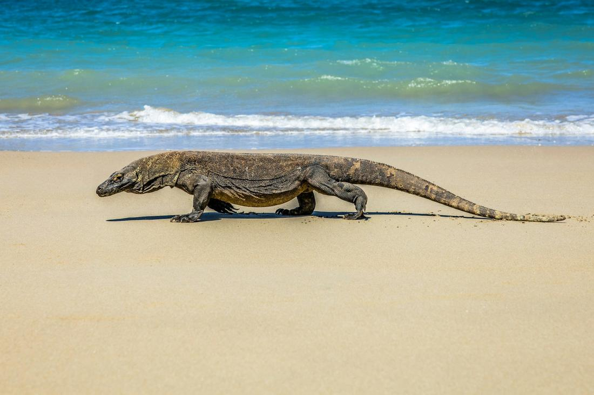
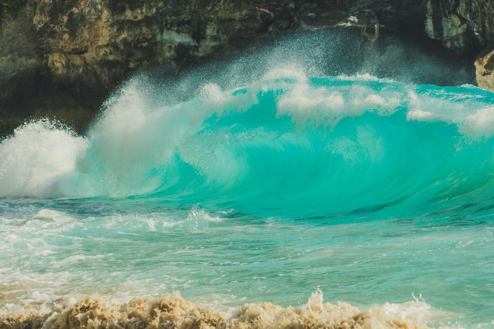

Volcanic jungles, ancient temples, and islands so blue they barely look real.
Indonesia is the trip I recommend when a client tells me they want to feel like they've truly left the ordinary world behind. This is a nation of more than 17,000 islands, and Bali alone could keep you busy for a month — but I always encourage travelers to venture further, out to the pink-sand beaches of Komodo National Park or the cliff-top viewpoints of Nusa Penida. Every island has its own personality, its own gods, its own particular shade of green.
What makes Indonesia so special to me is the way it layers experiences on top of one another. You can spend your morning wandering a centuries-old water temple, your afternoon standing face to face with the world's largest living lizard, and your evening watching a traditional fire dance as the sun drops into the ocean. It's spiritual, it's wild, and it's genuinely unlike anywhere else I book for clients.
As your travel advisor, here's exactly how I'd build out an Indonesia adventure — here are 3 excursions I love arranging.

If Bali has a soul, I'd argue it lives in and around Ubud, and this package is built to soak in as much of it as possible. We start at the Tegalalang Rice Terraces, where emerald tiers cascade down the hillside in one of the most photographed views in all of Bali, then head to Tirta Empul, the holy water temple where locals and visitors alike take part in a traditional purification ritual beneath spouts of spring water believed to be sacred. From there, it's the Sacred Monkey Forest Sanctuary, home to hundreds of long-tailed macaques wandering freely among moss-covered temple ruins, followed by a stop at Tegenungan Waterfall to cool off in the mist. We'll wrap the day with a wander through Ubud's art market and the grounds of Ubud Palace, where traditional Balinese dance performances often take place in the evening. This is the package I build for clients who want Bali's spiritual and cultural side front and center, not just the beach — it's grounding, it's beautiful, and it slows your whole trip down in the best way.

This is the package for clients who want their Indonesia trip to feel like an expedition, and it usually starts with a flight to Labuan Bajo followed by a multi-day sail aboard a traditional wooden phinisi boat through Komodo National Park. The headline stop, of course, is walking with a ranger through Komodo or Rinca Island to see wild Komodo dragons in their natural habitat, the largest living lizards on Earth. From there, we climb Padar Island at sunrise for its now-famous three-bay viewpoint, snorkel the rose-tinted sand of Pink Beach, and swim alongside manta rays gliding through the current at Manta Point. Evenings are spent anchored in quiet coves, watching the sky turn colors most people never see outside of a screensaver. I love recommending this one to couples celebrating something and to adventurous families with older kids — it's a genuinely rare experience, and one that most travelers never think to ask their travel advisor to arrange.

Nusa Penida is a quick fast-boat ride from Sanur, but it feels like a different world once you arrive — rugged, wind-swept, and lined with some of the most dramatic coastline in Southeast Asia. This package takes you to the island's three biggest icons in a single day: the T-Rex-shaped cliff viewpoint at Kelingking Beach, the natural infinity pool of Angel's Billabong carved right into the rock, and Broken Beach, where a collapsed sea arch has created a perfect circular bay you view from above. We'll finish at Crystal Bay, where the water turns an almost impossible shade of turquoise, perfect for a swim or a snorkel before the boat back to the mainland. It's a full, adventurous day best suited to travelers who don't mind a bit of walking and some genuinely jaw-dropping viewpoints along steep cliffside paths. I typically build this in as a day trip from a Bali-based itinerary, and it consistently comes back as one of my clients' favorite single days of the whole trip.
Prefer to plan together? I'll build your custom package. Already know what you want? Book instantly through my travel portal.